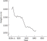
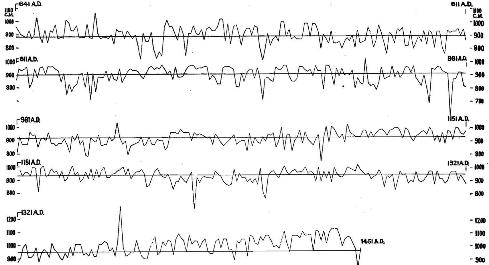

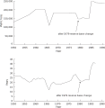
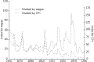

14 On Variability in Sampling
[Debra said]: “I’ve had such good luck with Japanese cars and poor luck with American...”
The ’65 Ford Mustang: “It was fun, but I had to put two new transmissions in it.”
The Ford Torino: “That got two transmissions too. That finished me with Ford.”
The Plymouth Horizon: “The disaster of all disasters. That should’ve been painted bright yellow. What a lemon.”
(From Washington Post Magazine , May 17, 1992, p. 19)
Do the quotes above convince you that Japanese cars are better than American? Has Debra got enough evidence to reach the conclusion she now holds? That sort of question, and the reasoning we use to address it, is the subject of this chapter.
More generally, how should one go about using the available data to test the hypothesis that Japanese cars are better? That is an example of the questions that are the subject of statistics.
14.1 Variability and small samples
Perhaps the most important idea for sound statistical inference — the section of the book we are now beginning, in contrast to problems in probability, which we have studied in the previous chapters — is recognition of the presence of variability in the results of small samples . The fatal error of relying on too-small samples is all too common among economic forecasters, journalists, and others who deal with trends and public opinion. Athletes, sports coaches, sportswriters, and fans too frequently disregard this principle both in their decisions and in their discussion.
Our intuitions often carry us far astray when the results vary from situation to situation — that is, when there is variability in outcomes — and when we have only a small sample of outcomes to look at.
To motivate the discussion, I’ll tell you something that almost no American sports fan will believe: There is no such thing as a slump in baseball batting. That is, a batter often goes an alarming number of at-bats without getting a hit, and everyone — the manager, the sportswriters, and the batter himself — assumes that something has changed, and the probability of the batter getting a hit is now lower than it was before the slump. It is common for the manager to replace the player for a while, and for the player and coaches to change the player’s hitting style so as to remedy the defect. But the chance of a given batter getting a hit is just the same after he has gone many at-bats without a hit as when he has been hitting well. A belief in slumps causes managers to play line-ups which may not be their best.
By “slump” I mean that a player’s probability of getting a hit in a given at-bat is lower during a period than during average periods. And when I say there is no such thing as a slump, I mean that the chances of getting a hit after any sequence of at-bats without a hit is not different than the long-run average.
The “hot hand” in basketball is another illusion. In practical terms, the hot hand does not exist — or rather — if it does, the effect is weak.1 The chance of a shooter scoring is more or less the same after they have just missed a flock of shots as when they have just sunk a long string. That is, the chance of scoring a basket is not appreciably higher after a run of successes than after a run of failures. But even professional teams choose plays on the basis of who supposedly has a hot hand.
Managers who substitute for the “slumping” or “cold-handed” players with other players who, in the long run, have lower batting averages, or set up plays for the shooter who supposedly has a hot hand, make a mistake. The supposed hot hand in basketball, and the slump in baseball, are illusions because the observed long runs of outs, or of baskets, are statistical artifacts, due to ordinary random variability. The identification of slumps and hot hands is superstitious behavior, classic cases of the assignment of pattern to a series of events when there really is no pattern.
How do statisticians ascertain that slumps and hot hands are very weak effects, or do not exist? In brief, in baseball we simulate a hitter with a given average — say .250 — and compare the results with actual hitters of that average, to see whether they have “slumps” longer than the computer. The method of investigation is roughly as follows. You program a computer or other machine to behave the way a player would, given the player’s long-run average, on the assumption that each trial is a random drawing. For example, if a player has a .250 season-long batting average, the machine is programmed like a bucket containing three black balls and one white ball. Then for each simulated at bat, the machine shuffles the “balls” and draws one; it then records whether the result is black or white, after which the ball is replaced in the bucket. To study a season with four hundred at-bats, a simulated ball is drawn four hundred times.
The records of the player’s real season and the simulated season are then compared. If there really is such a thing as a non-random slump or streak, there will be fewer but longer “runs” of hits or outs in the real record than in the simulated record. On the other hand, if performance is independent from at-bat trial to at-bat trial, the actual record will change from hit to out and from out to hit as often as does the random simulated record. I suggested this sort of test for the existence of slumps in my 1969 book that first set forth the resampling method, a predecessor of this book.
For example, Table 14.1 shows the results of one 400 at-bat season for a simulated .250 hitter. (H = hit, O = out, sequential at-bats ordered vertically) Note the “slump” — 1 for 24 — in columns 7 & 8 (in bold).
| O | O | O | O | O | O | H | O | O | O | O | H | O | H | O | O |
| O | O | O | O | O | H | O | O | H | H | H | O | H | H | O | O |
| O | O | O | H | O | O | O | O | H | O | O | O | H | H | O | O |
| O | O | O | O | O | H | H | O | O | O | O | H | O | O | O | H |
| H | O | H | O | O | H | O | O | O | H | O | O | O | O | H | O |
| H | O | O | H | O | O | H | H | O | H | O | O | H | O | H | O |
| O | O | H | O | O | O | O | H | O | O | O | O | O | O | H | O |
| O | O | H | O | O | O | O | H | H | O | O | O | O | O | O | O |
| O | H | O | O | O | O | O | O | H | H | O | O | O | H | O | O |
| O | H | H | O | O | O | O | H | O | H | O | O | H | O | H | O |
| O | O | H | H | O | H | O | H | O | H | H | H | O | O | O | O |
| H | O | O | O | O | O | O | O | O | H | O | H | H | O | O | O |
| O | H | O | O | O | H | O | O | O | O | O | O | O | O | H | H |
| H | O | H | O | O | O | H | O | O | O | O | H | H | O | O | H |
| O | O | O | O | H | H | O | O | O | O | O | H | H | H | H | O |
| O | O | O | O | H | H | O | O | O | O | O | H | O | O | O | O |
| H | O | O | O | O | O | O | O | O | O | O | O | O | O | O | O |
| O | H | H | H | O | O | O | H | O | H | O | O | O | O | O | O |
| O | H | O | H | O | O | O | O | H | O | O | O | O | H | O | O |
| O | O | O | H | H | O | O | O | O | O | H | O | H | O | O | H |
| O | H | O | O | H | O | O | O | O | O | H | O | O | O | O | O |
| H | H | H | O | O | O | O | H | O | O | O | O | H | O | O | H |
| O | O | O | H | H | O | O | O | O | O | O | O | O | O | H | O |
| O | H | O | O | O | O | O | H | H | O | O | O | O | O | O | H |
| O | O | O | O | O | H | O | O | O | H | O | H | O | H | O | O |
Harry Roberts investigated the batting records of a sample of major leaguers.2 He compared players’ season-long records against the behavior of random-number drawings. If slumps existed rather than being a fiction of the imagination, the real players’ records would shift from a string of hits to a string of outs less frequently than would the random-number sequences. But in fact the number of shifts, and the average lengths of strings of hits and outs, are on average the same for players as for player-simulating random-number devices.
Over long periods, averages may vary systematically, as Ty Cobb’s annual batting averages varied non-randomly from season to season, Roberts found. But in the short run, most individual and team performances have shown results similar to the outcomes that a lottery-type random number machine would produce.
Thomas Gilovich, Robert Vallone and Amos Twersky (1985) performed a similar study of basketball shooting. They examined the records of shots from the floor by the Philadelphia 76’ers, foul shots by the Boston Celtics, and a shooting experiment of Cornell University teams. They found that “basketball players and fans alike tend to believe that a player’s chance of hitting a shot are greater following a hit than following a miss on the previous shot. However, detailed analyses…provided no evidence for a positive correlation between the outcomes of successive shots.”
To put their conclusion differently, knowing whether a shooter has scored or not scored on the previous shot — or in any previous sequence of shots — is of absolutely no use in predicting whether the shooter will or will not score on the next shot. Similarly, knowledge of the past series of at-bats in baseball does not improve a prediction of whether a batter will get a hit this time.
Of course a batter feels — and intensely — as if she or he has a better chance of getting a hit at some times than at other times. After a series of successful at-bats, both sandlot players and professionals feel confident that this time will be a hit, too. And after you have hit a bunch of baskets from all over the court, you feel as if you can’t miss.
But notice that card players get the same poignant feeling of being “hot” or “cold,” too. After a poker player “fills” several straights and flushes in a row, s/he feels s/he will hit the next one too. (Of course there are some players who feel just the opposite, that the “law of averages” is about to catch up with them.)
You will agree, I’m sure, that the cards don’t have any memory, and a player’s chance of filling a straight or flush remains the same no matter how he or she has done in the last series of hands. Clearly, then, a person can have a strong feeling that something is about to happen even when that feeling has no foundation. This supports the idea that even though a player in sports “feels” that s/he is in a slump or has a hot hand, this does not imply that the feeling has any basis in reality.
Why, when a batter is low in his/her mind because s/he has been making a lot of outs or for personal reasons, does her/ his batting not suffer? And why the opposite? Apparently at any given moment there are many influences operating upon a player’s performance in a variety of directions, with none of them clearly dominant. Hence there is no simple convincing explanation why a player gets a hit or an out, a basket or a miss, on any given attempt.
But though science cannot provide an explanation, the sports commentators always are ready to offer their analyses. Listen, for example, to how they tell you that Joe Zilch must have been trying extra hard just because of his slump. There is a sportswriter’s explanation for anything that happens.
Why do we believe the nonsense we hear about “momentum,” “comeback,” “she’s due this time,” and so on? The adult of the human species has a powerful propensity to believe that he or she can find a pattern even when there is no pattern to be found. Two decades ago I cooked up series of numbers with a random-number machine that looked as if they were prices on the stock market. Subjects in the experiment were told to buy and sell whichever stocks they chose. Then I gave them “another day’s prices,” and asked them to buy and sell again. The subjects did all kinds of fancy figuring, using an incredible variety of assumptions — even though there was no way for the figuring to help them. That is, people sought patterns even though there was no reason to believe that there were any patterns to be found.
When I stopped the game before the ten buy-and-sell sessions the participants expected, people asked that the game continue. Then I would tell them that there was no basis for any patterns in the data. “Winning” or “losing” had no meaning. But the subjects demanded to continue anyway. They continued believing that they could find patterns even after I told them that the numbers were randomly looked up and not real stock prices.
The illusions in our thinking about sports have important counterparts in our thinking about such real-world phenomena as the climate, the stock market, and trends in the prices of raw materials such as mercury, copper and wheat. And private and public decisions made on the basis of faulty understanding of these real situations, caused by illusory thinking on the order of belief in slumps and hot hands, are often costly and sometimes disastrous.
An example of the belief that there are patterns when there are none: Systems for finding patterns in the stock market are peddled that have about the same reliability as advice from a racetrack tout — and millions buy them.
One of the scientific strands leading into research on variability was the body of studies that considers the behavior of stock prices as a “random walk.” That body of work asserts that a stock broker or chartist who claims to be able to find patterns in past price movements of stocks that will predict future movements should be listened to with about the same credulity as a racetrack tout or an astrologer. A second strand was the work in psychology in the last decade or two which has recognized that people’s estimates of uncertain events are systematically biased in a variety of interesting and knowable ways.
The U.S. government has made — and continues to make — blunders costing the public scores of billions of dollars, using slump-type fallacious reasoning about resources and energy. Forecasts are issued and policies are adopted based on the belief that a short-term increase in price constitutes a long-term trend. But the “experts” employed by the government to make such forecasts do no better on average than do private forecasters, and often the system of forecasting that they use is much more misleading than would be a random-number generating machine of the sort used in the baseball slump experiments.
Please look at the data in Figure 14.1 for the height of the Nile River over about half a century. Is it not natural to think that those data show a decline in the height of the river? One can imagine that if our modern communication technology existed then, the Cairo newspapers would have been calling for research to be done on the fall of the Nile, and the television anchors would have been warning the people to change their ways and use less water.
Let’s look at Figure 14.2 which represents the data over an even longer period. What now would you say about the height of the Nile? Clearly the “threat” was non-existent, and only appeared threatening because the time span represented by the data was too short. The point of this display is that looking at too-short a segment of experience frequently leads us into error. And “too short” may be as long as a century.

Another example is the price of mercury, which is representative of all metals. Figure 14.3 shows a forecast made in 1976 by natural-scientist Earl Cook (1976). He combined a then-recent upturn in prices with the notion that there is a finite amount of mercury on the earth’s surface, plus the mathematical charm of plotting a second-degree polynomial with the computer. Figure 14.4 and Figure 14.5 show how the forecast was almost immediately falsified, and the price continued its long-run decline.



Lack of sound statistical intuition about variability can lead to manipulation of the public being by unscrupulous persons. Commodity funds sellers use a device of this sort to make their results look good (The Washington Post, Sep 28, 1987, p. 71). Some individual commodity traders inevitably do well in their private trading, just by chance. A firm then hires one of them, builds a public fund around him, and claims the private record for the fund’s own history. But of course the private record has no predictive power, any more than does the record of someone who happened to get ten heads in a row flipping coins.
How can we avoid falling into such traps? It is best to look at the longest possible sweep of history. That is, use the largest possible sample of observations to avoid sampling error. For copper we have data going back to the 18th century B.C. In Babylonia, over a period of 1000 years, the price of iron fell to one fifth of what it was under Hammurabi (almost 4000 years ago), and the price of copper then cost about a thousand times its current price in the U.S., relative to wages. So the inevitable short-run increases in price should be considered in this long-run context to avoid drawing unsound conclusions due to small-sample variability.
Proof that it is sound judgment to rely on the longest possible series is given by the accuracy of predictions one would have made in the past. In the context of copper, mercury, and other raw materials, we can refer to a sample of years in the past, and from those years imagine ourselves forecasting the following year. If you had bet every time that prices would go down in consonance with the long-run trend, you would have been a big winner on average.
14.2 Regression to the mean
UP, DOWN “The Dodgers demoted last year’s NL rookie of the year, OF Todd Hollandsworth (.237, 1 HR, 18 RBI) to AAA Albuquerque...” (Item in Washington Post , 6/14/97)
It is a well-known fact that the Rookie of the Year in a sport such as baseball seldom has as outstanding a season in their sophomore year. Why is this so? Let’s use the knowledge we have acquired of probability and simulation to explain this phenomenon.
The matter at hand might be thought of as a problem in pure probability — if one simply asks about the chance that a given player (the Rookie of the Year) will repeat. Or it could be considered a problem in statistics, as discussed in coming chapters. Let’s consider the matter in the context of baseball.
Imagine 10 mechanical “ball players,” each a machine that has three white balls (hits) and 7 black balls. Every time the machine goes to bat, you take a ball out of the machine, look to see if it is a hit or an out, and put it back. For each “ball player” you do this 100 times. One of them is going to do better than the others, and that one becomes the Rookie of the Year. See Table 14.2.
| # of Hits | Batting Average |
|---|---|
| 32 | .320 |
| 34 | .340 |
| 33 | .330 |
| 30 | .300 |
| 35 | .350 |
| 33 | .330 |
| 30 | .300 |
| 31 | .310 |
| 28 | .280 |
| 25 | .250 |
Would you now expect that the player who happened to be the best among the top ten in the first year to again be the best among the top ten in the next year, also? The sports writers do. But of course this seldom happens. The Rookie of the Year in major-league baseball seldom has as outstanding a season in their sophomore year as in their rookie year. You can expect them to do better than the average of all sophomores, but not necessarily better than all of the rest of the group of talented players who are now sophomores. (Please notice that we are not saying that there is no long-run difference among the top ten rookies. But suppose there is. Table 14.3 shows the season’s performance for ten batters of differing performances).
| “True” | Rookie |
|---|---|
| .270 | .340 |
| .270 | .240 |
| .280 | .330 |
| .280 | .300 |
| .300 | .280 |
| .300 | .420 |
| .320 | .340 |
| .320 | .350 |
| .330 | .260 |
| .330 | .330 |
We see from Table 14.3 that we have ten batters whose “true” batting averages range from .270 to .330. Their rookie year performance (400 at bats), simulated on the basis of their “true”average is on the right. Which one is the rookie of the year? It’s #6, who hit .420 during the rookie session. Will they do as well next year? Not likely — their “true” average is only .300.
Start of sampling_variability notebook
Try generating some rookie “seasons” yourself with the following commands, ranging the batter’s “true” performance by changing the value of p_hit (the probability of a hit).
# Simulate a rookie season of 400 at-bats.
# You might try changing the value below and rerunning.
# This is the true (long-run) probability of a hit for this batter.
p_hit <- 0.4
message('True average is: ', p_hit)True average is: 0.4# We resample _with_ replacement here; the chances of a hit do not change
# From at-bat to at-bat.
at_bats <- sample(c('Hit', 'Out'), prob=c(p_hit, 1 - p_hit), size=400, replace=TRUE)
simulated_average <- sum(at_bats == 'Hit') / 400
# Show the result
message('Simulated average is: ', simulated_average)Simulated average is: 0.445Simulate a set of 10 or 20 such rookie seasons, and look at the one who did best. How did their rookie season compare to their “true” average?
End of sampling_variability notebook
The explanation is the presence of variability . And lack of recognition of the role of variability is at the heart of much fallacious reasoning. Being alert to the role of variability is crucial.
Or consider the example of having a superb meal at a restaurant — the best meal you have ever eaten. That fantastic meal is almost surely the combination of the restaurant being better than average, plus a lucky night for the chef and the dish you ordered. The next time you return you can expect a meal better than average, because the restaurant is better than average in the long run. But the meal probably will be less good than the superb one you had the first time, because there is no reason to believe that the chef will get so lucky again and that the same sort of variability will happen this time.
These examples illustrate the concept of “regression to the mean” — a confusingly-titled and very subtle effect caused by variability in results among successive samples drawn from the same population. This phenomenon was given its title more than a century ago by Francis Galton, one of the great founders of modern statistics, when at first he thought that the height of the human species was becoming more uniform, after he noticed that the children of the tallest and shortest parents usually are closer to the average of all people than their parents are. But later he discovered his fallacy — that the variability in heights of children of quite short and quite tall parents also causes some people to be even more exceptionally tall or short than their parents. So the spread in heights among humans remains much the same from generation to generation; there is no “regression to the mean.” The heart of the matter is that any exceptional observed case in a group is likely to be the result of two forces — a) an underlying propensity to differ from the average in one direction or the other, plus b) some chance sampling variability that happens (in the observed case) to push even further in the exceptional direction.
A similar phenomenon arises in direct-mail marketing. When a firm tests many small samples of many lists of names and then focuses its mass mailings on the lists that performed best in the tests, the full list “rollouts” usually do not perform as well as the samples did in the initial tests. It took many years before mail-order experts (see especially (Burnett 1988)) finally understood that regression to the mean inevitably causes an important part of the dropoff from sample to rollout observed in the set of lists that give the very best results in a multi-list test.
The larger the test samples, the less the dropoff, of course, because larger samples reduce variability in results. But larger samples risk more money. So the test-sample-size decision for the marketer inevitably is a trade-off between accuracy and cost.
And one last amusing example: After I (JLS) lectured to the class on this material, the student who had gotten the best grade on the first mid-term exam came up after class and said: “Does that mean that on the second mid-term I should expect to do well but not the best in the class?” And that’s exactly what happened: He had the second-best score in the class on the next midterm.
A related problem arises when one conducts multiple tests, as when testing thousands of drugs for therapeutic value. Some of the drugs may appear to have a therapeutic effect just by chance. We will discuss this problem later when discussing hypothesis testing.
14.3 Summary and conclusion
The heart of statistics is clear thinking. One of the key elements in being a clear thinker is to have a sound gut understanding of statistical processes and variability. This chapter amplifies this point.
A great benefit to using simulations rather than formulas to deal with problems in probability and statistics is that the presence and importance of variability becomes manifest in the course of the simulation work.
We are simplifying here; the Hot-Hand is a controversial topic, and it has its own Wikipedia page with information and discussion: https://en.wikipedia.org/wiki/Hot_hand. It may be overstating to say the effect does not exist, but if it does exist, the effect is much smaller than most sports fans believe it to be.↩︎
See Simon’s description of these experiments in Batter’s slump and other illusions, Washington Post, August 9th, 1987.↩︎